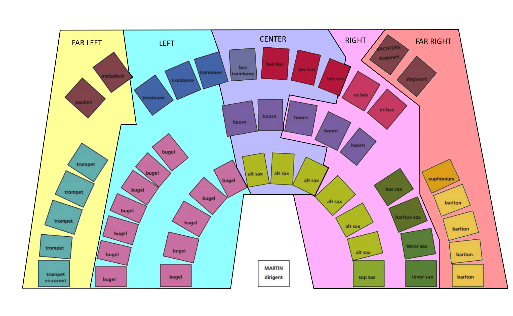

I had the opposite challenge to Cat & Mice writing this piece: fanfares are HUGE! But hey, that's just a whole load of options to play around with. It really helped in this case that I'd been studying spatial composition for my thesis, and so I had a strong concept to base my composition around. It might be a bit hard to hear in the sibelius render, but I took a lot of conscious steps to control not just the tone and harmony, but the directionality across passages.

In some ways Cogs feels like it generated itself. I wrote the first half fairly intuitively, then wrote what was supposed to be an intense final passage which grew into the entire second half. The biggest issue, I've been told, is that my idea for a vibraphone/glockenspiel player to play a constant set of fast arpreggio's throughout the piece isn't very realistic. It's easy to imagine, but I guess that's the issue with writing for instruments you don't play! For now, due to this and other issues, the only "recording" is a Sibelius render using the NotePerformer add-on. It has some weird artifacts, so if you can read sheet music I recommend you read along using these sheets.